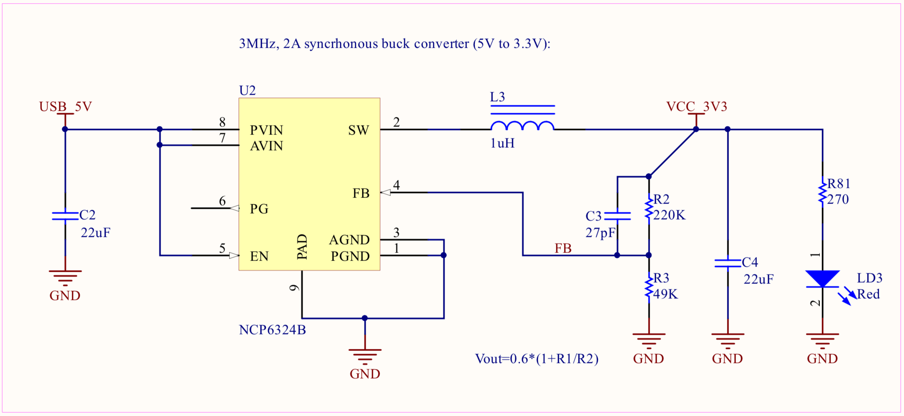
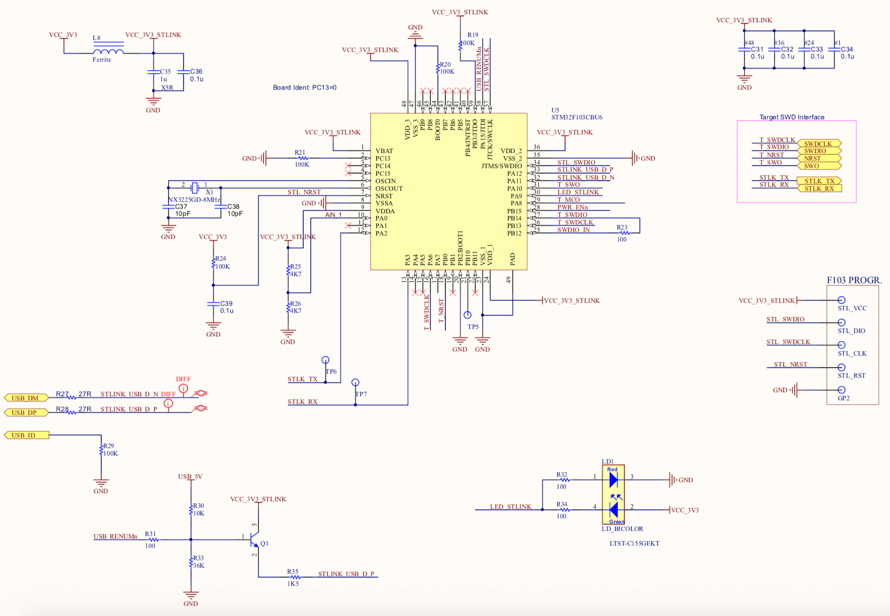

Circuit Schematics¶
The full SensorIO design Schematics can be found here, and as a quick reference, some of the relevant sections are detailed below:
Power supply¶
Power input
The primary power source during development is the USB Micro B connector.
The figure below shows the connections for USB connector (P1) and ESD protection diodes (D1). The ferrite L2 helps to reduce noise coming from the USB shielding. The USB data lines are routed to the STM32F103 (ST-Link probe).

The VBUS rail is connected through the AP22802A load switch, which provides an over-load current protection: when the current reaches 2A, limits the current to 1A until the short-circuit state is resolved:

Alternative 5V input
If the device needs to be installed in a permanent setup, it is also possible to provide 5V power through any of the MikroBUS sockets' +5V pins.
Please note that, in case these pins are used to power the board, the AP22802A protection will be bypassed, therefore care must be taken to avoid damages caused by short circuits.

To convert the 5V from to the 3.3V that most of the sub-circuits need, the board uses the NCP6324B from On-Semiconductor (U2). The NCP6324B is a 3MHz, 2A synchronous buck-converter with high efficiency and low ripple.
The feedback resistors R2 and R3 set the output voltage close to 3.3V.  The red LED (LD3) is turned on when the VCC_3V3 power bus is active.
ST-Link¶
The board integrates the ST-Link/V2-1 from STMicroelectronics. This debugger probe is based on the STM32F103 Cortex®-M3 MCU, running at 72 MHz.
This MCU interfaces directly to the USB connector. It uses a ST-Micro proprietary protocol to transfer the SWD/JTAG protocol data, control the Reset/Run/Stop states of the target MCU and converts a Virtual Comm Port into the physical UART connected to the target MCU (STLK_TX and STLK_RX lines) which can be used by the application to print logging data or receive commands from the host PC.
The NPN transistor (Q1) is used to push the USB_DP line to force a USB re-enumeration after a firmware update.

The bi-color LED (LD1) indicates the state of the ST-Link interface:
LD1 status indication:
- Blinking RED: the first USB enumeration with the PC is taking place
- RED: communication between the PC and ST-LINK/V2 is established (end of enumeration)
- Blinking GREEN / RED: data being exchanged between the target and the PC
- GREEN: the last communication has been successful
- ORANGE: ST-LINK/V2 communication with the target has failed.
Please check the tools section for more information on how to flash a binary and connect to a GDB client.
Main MCU¶
The target MCU uses the STM32F413ZHJ6 version (UFBGA144 packaging version, 1.5MB Flash, 320KB RAM). Please check the board pinouts section and the SensorIO schematics for a full reference of the exposed I/Os.
Clocks¶
The MCU uses 2 external crystals for the reference oscillators:
-
Y4 (16 MHz): used as a precise main clock source (the MCU has a less-precise internal RC-oscillator):

-
Y3 (32.768 kHz) which can be used to mantain a real-time clock or power management:

Analog VREF¶
The image below shows the connections for the Analog supply and VREF pins used by the internal 12-bit ADC:
 The LC filter (L10 and C86) attenuates the "digital" noise that can be present in the VCC power rail. VREF+ is wired to the AnalogVCC and decoupled by C87 and C88. With this configuration, the input range for the ADC converter will be [0-3.3V].
The LC filter (L10 and C86) attenuates the "digital" noise that can be present in the VCC power rail. VREF+ is wired to the AnalogVCC and decoupled by C87 and C88. With this configuration, the input range for the ADC converter will be [0-3.3V].
Please refer to the expansion interfaces section for more information on using the analog inputs.
RGB LED¶
The User Status (LD2) is a RGB LED (a red, a blue and a green LEDs packaged together). Each LED is controlled separately.
The 3 control pins are wired to the timer TIM5 CH[1:3] so the brightness can be regulated using PWM (pulse-width modulation).

The snippet below shows how to use PWM to controll the brightness of the blue LED:
mbed example: dimming the blue LED
1 2 3 | PwmOut blueLed(PF_5); //Port F bit #5 blueLed.period(1/100f); //Set PWM frequency to 100Hz (1/100 seconds) blueLed.write(0.2f); //Set Duty Cycle to 20% |
Push-buttons¶
The board has 2 push-buttons:
- The MCU Reset (located next to the OLED display):

- A user-programmable button (S1), wired to PC_13:

The snippet below shows how configure the button to trigger an interrupt on press:
mbed example: button interrupt
1 2 3 4 5 6 7 8 9 10 11 12 13 | InterruptIn button(PC_13); DigitalOut greenLed(PF_4); void pinInt(){ greenLed = !greenLed; //flip the green LED on each button press } int main(){ button.fall(&pinInt); // attach the pinInt() function to the falling edge while(1){ // wait around, interrupts will interrupt this! printf("."); wait(1); } } |
Tip: debouncing
To detect a button press, remember that the mechanical action usually indroduces some signal bouncing. It's reasonable to add a delay of at least 20ms before taking any action (software debouncing).
Wi-Fi¶
The capture below shows the TI CC3210 Network Processor SoC and it's associated power supply and oscillator components:

The CC3120 is powered by the main 3.3V rail, and integrates 3 internal DC/DC converters to generate the voltages needed for the operation of each SoC section. The main oscillator uses an external 40 MHz crystal (Y2) and a 32.768 kHz crystal (Y1) is used for power management and real-time bookkeping. An external SPI flash memory (MX25R1635FM1IL0, 16Mbit) is used to store the network stack and credentials.
MCU interface¶
The interfacing with the target MCU is done through the SPI bus (signals shown below). This interface contains also a "factory restore" pin, which can be used by the target application to restore the factory image.

Factory restore
In order to restore the original flash image, the CC_FACTORY_RESTORE line should to be hold in low state for minimum 8 seconds after the CC_nRESET is released.
Flash programming interface¶
The CC3210 exposes an extra UART which can be used to (re)program the external flash memory. These signals (along with the nHIB line) are exposed on testpoints on the back of the board. For more information on how to use this interface, refer to the SRU469C application note from TI.

RF section¶
The capture below shows the CC3120 RF 50Ω interface. A bandpass filter centered on 2.45 GHz helps to remove unwanted noise entering the SoC.

The LC-network formed by L4 and C11 performs the impedance matching from the PCB antenna to the 50 Ω characteristic impedance required by the SoC. The capture below shows the return loss seen by the CC3210 RF pin. The VSWR is approximately 1.16:1 (-22 dB at the center of the WiFi band).

In case that the board will be installed in a metallic box, or the WiFi range needs to be increased with a directional antenna, the circuit provides the option to use an external antenna connected to the u-Fl connector.
Using an external antenna
In order to route the RF signal to the u-Fl connector instead of the PCB antenna, the 0 Ω resistor R5 needs to be unsoldered and installed in the R4 location.
The small J1 connector is used for testing purposes, the matching test probe MXHQ87WA3000 from Murata Electronics can be used for such purposes. When the probe is connected, the connector switches off the output side.
Solid State Relays¶
The outputs OUT1 and OUT2, are driven by the opto-isolated "solid-state relay" TLP241A from Toshiba Semiconductor. These devices consist of a MOSFET transistor optically coupled (electrically isolated) to an infrared light emitting diode. They are housed in a 4-pin DIP package.
TLP241A output characteristics:
- ON-state current: 2 A max. continuous, 6 A pulsed (t=100 mseg, duty=10%)
- ON-state resistance: 150 mΩ (continuous)
- Isolation voltage: 5,000 Vrms
- Maximum DC voltage: 26 V (limited by the varistor)
- Maximum AC voltage: 20 Vrms (limited by the varistor)
The outputs are mapped to PG_2 (OUT1) and PG_3 (OUT2). The varistors R63 and R69 protect the relays from over-voltage peaks, limiting the nominal operation voltage to 26 Vdc or 20 Vrms for AC signals. The outputs schematic is shown below:

Using the outputs
These outputs can be used to control small DC motors (as a small water pump for your plants), AC/DC solenoid valves, or resistive loads (i.e. a termoelectric peltier element). If these outputs want to be used to control high power loads (i.e. a pump or a HVAC system) they can be used to drive contactors with 12V DC or AC coils (as the Schneider Electric LC1D12JL for example).
Warning!!!
The outputs' maximum voltage is 26 Vdc, DO NOT CONNECT DIRECTLY TO MAINS under any circumstance!
Here is a snippet showing how to control the ouputs:
mbed example: switching outputs
1 2 3 4 5 | DigitalOut relay1(PG_2); relay1 = 1; //enable output1 wait(5); relay1 = 0; //disable output1 |
Display¶
The display is a Vishay OLED-128O032D-SPP3N00000, a monochrome 0.9 inches graphic display OLED with a resolution of 128x32 pixels. The display is interfaced to the MCU through the SPI4 bus plus a Data/#command and reset control lines.

Memory card interface¶
The Micro MMC/SD card socket is interfaced to the MCU through the SDIO bus. The interface is configured to use the 4-bit mode. The schematic is shown below:

SWD debug connector¶
As an option to using the ST-Link interface to debug and program the target MCU, the Cortex-M™ 10-pin connector present in the front (SWD) can be used. Debug probes like Segger's J-Link® can be attached to this connector if preferred. The D8 diode array protects the MCU from ESD.

Using the SWD connector
Please note that, as the SWD lines are directly shared with the ST-Link interface, if the external debugger is used, the ST-Link application shouldn't be initialized or both debuggers will compete for the SWD lines. In general, it's sufficient to not initialize the ST-Link software on the host side (OpenOCD or ST-Util). In case this situation arises, just re-connect the USB cable to fix it.